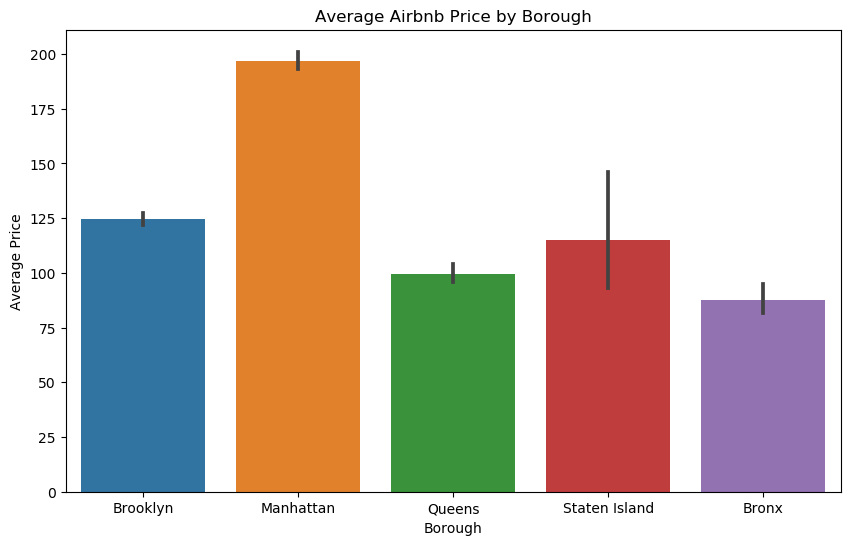
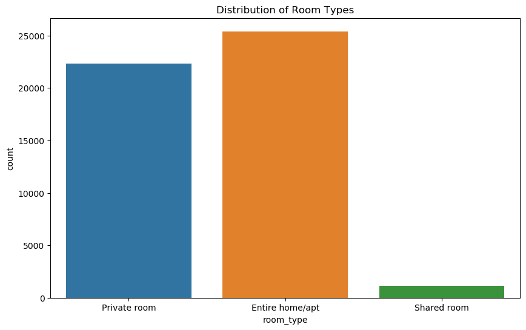

What I Did
From raw listings to interpretable city-level patterns
01
Prepared the Airbnb data
I worked with the NYC Airbnb dataset, cleaned the data, and created a more analysis-ready version for consistent exploratory work.
02
Explored borough-level patterns
I compared listings across Brooklyn, Manhattan, Queens, Staten Island, and the Bronx to understand price differences and market concentration.
03
Studied room-type behavior
I analyzed how private rooms, entire homes or apartments, and shared rooms are distributed across the city.
04
Visualized findings clearly
I used charts, distributions, and map-oriented visuals to make the EDA findings easier to interpret and present.
Questions Explored
What this project helps answer
- Which boroughs have the highest average Airbnb prices?
- How are room types distributed across listings?
- Where are Airbnb listings most concentrated in New York City?
- How does pricing vary across areas and listing types?
- What patterns can be seen after cleaning and exploring the data?
Key Insights
What stands out in the analysis
Manhattan has the highest average price
The borough comparison chart shows Manhattan clearly leading the city in average Airbnb pricing.
Entire homes and private rooms dominate
Room-type analysis suggests the NYC market is largely driven by entire home or apartment listings and private rooms.
Shared rooms are much less common
Shared room listings form a small minority compared with the other two room categories.
Location strongly affects market behavior
Borough and spatial patterns indicate that pricing and listing activity are closely tied to where properties are located.
Visual Highlights
Charts that explain the NYC Airbnb market
These visuals show how price and room type vary across the city and help turn raw listing data into a clearer story about Airbnb patterns in New York.


Project Files
The actual analysis assets behind the project
Source
Raw Airbnb CSV
Processing
Cleaned Dataset + Notebook
Output
EDA Visual Story
Skills I Learned
What this project helped me practice
Data Cleaning
I improved how I prepare raw listing data for more reliable exploratory analysis.
Exploratory Data Analysis
I practiced finding useful patterns by comparing borough, price, and room-type behavior.
Visualization
I learned how to use charts and spatial visuals to explain city-level patterns more clearly.
Urban Data Interpretation
I got better at translating location-based patterns into meaningful observations about the market.
Dataset Structuring
I strengthened my workflow of moving from raw CSV data to a cleaned and usable analysis dataset.
Project Storytelling
I practiced presenting EDA work as a neat project case study rather than just a notebook result.
Tools Used
Core workflow behind the analysis
Python
Pandas
Matplotlib
EDA
CSV Data Processing
Project Summary
This project shows my ability to clean real-world listing data, study how location and room type affect the Airbnb market, and present those findings in a clear, visually structured format.
I used exploratory analysis to turn NYC listing data into an understandable story about place, price, and market structure.